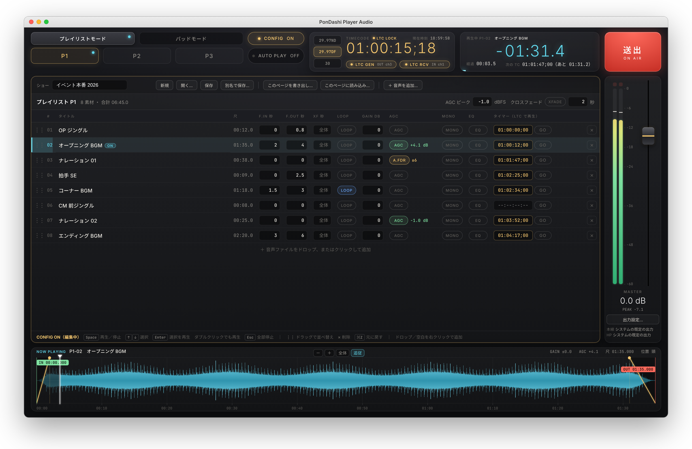
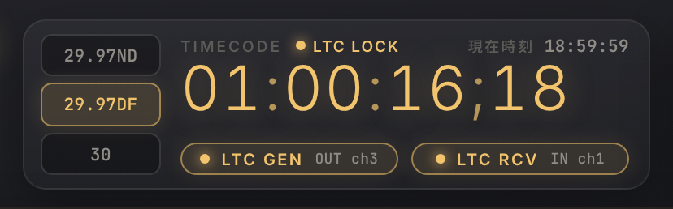
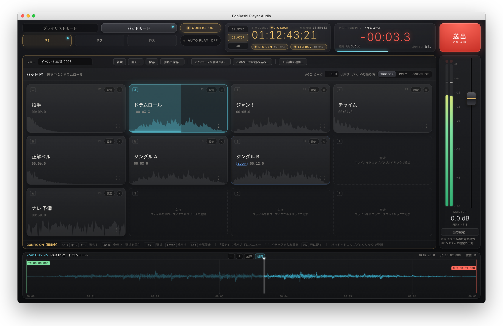

PonDashi Player Audio PRO
PonDashi Player Audio に、LTC（タイムコード）の入力と出力を加えた上位版です。外から来るタイムコードに合わせて音を出したり、タイムコードを送り出して他の機器を動かしたりできます。
配信準備中
Mac

PRO で加わる機能
PonDashi Player Audio の機能はすべてそのまま使えます。
- 受けるLTC 入力

タイムコードのパネル。フレームレートの切替、ロック状態、入出力のチャンネルを一目で確認できます。 LTC を受けて再生
オーディオインターフェイスの入力から LTC を受け取り、タイマー欄に入れたタイムコードちょうどに音を出します。
フレームレート
29.97 DF・29.97 NDF・30 などを切り替えられます。
- 送るLTC 出力
LTC を生成
指定した出力チャンネルからタイムコードを送り出し、照明・映像などの機器を同期させます。
- 鳴らすパッド

パッドで鳴らしている間も、タイムコードの表示はそのまま見られます。